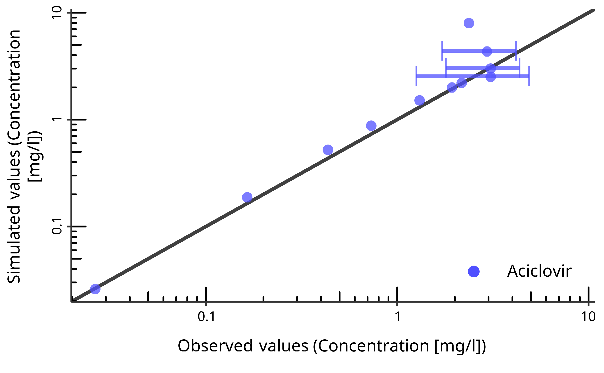

esqlabsR builds modeling and simulation workflows on top
of the Open Systems Pharmacology Suite (OSPS). It organizes everything a
PBPK or QSP analysis needs (the model, the subjects you simulate, the
dosing, the parameters you apply, the outputs you record, the observed
data you compare against, and the figures you produce) into a single
Project. You load a Project once, then run scenarios
and plot results from it.
This article walks the workflow end to end against a writable copy of the bundled example: you inspect a loaded project, author a scenario and a figure, then run and plot them. Each step links onward to the article that covers it in depth.
Install and load
esqlabsR depends on the OSPS R packages. Install those
via the Open Systems Pharmacology setup instructions, then install and
load esqlabsR:
Load a project
The package bundles a complete example Project. So that
saveProject() never touches the read-only example inside
the installed package, you work against a writable copy:
initProject() scaffolds a copy into a temporary directory,
and loadProject() reads it into an in-memory
Project object. (initProject() returns the
directory it scaffolds; loadProject() wants the
Project.json path inside it.)
project_dir <- withr::local_tempdir()
initProject(destination = project_dir, type = "example", createExcel = FALSE)
project <- loadProject(file.path(project_dir, "Project.json"))Printing the Project gives you a quick map of its name, location, and definition counts.
print(project)
#> <Project>
#> • Name: Example
#> • Description: Aciclovir IV PK example project
#> • Schema Version: 2.0
#> • esqlabsR Version: 6.0.0
#> • JSON File: Project.json
#>
#> ── Paths ───────────────────────────────────────────────────────────────────────
#> • Simulations Folder: Models/Simulations
#> • Data Folder: Data
#> • Populations Folder: Populations
#> • Output Folder: Results
#> • Definitions Folder: definitions
#>
#> ── Definitions ─────────────────────────────────────────────────────────────────
#> • Scenarios: 3
#> • Individuals: 1
#> • Populations: 1
#> • Parameter Sets: 4
#> • Initial Conditions: 1
#> • Applications: 1
#> • Output Paths: 2
#> • Observed Data: 1
#> • Data Combined: 1
#> • Plots: 1
#> • Plot Grids: 1
#> • Parameter Identification: 1
#>
#> ── Excel ───────────────────────────────────────────────────────────────────────
#> • Configurations Folder: Configurations/
#> • Model Parameters File: ModelParameters.xlsx
#> • Individuals File: Individuals.xlsx
#> • Populations File: Populations.xlsx
#> • Scenarios File: Scenarios.xlsx
#> • Applications File: Applications.xlsx
#> • Plots File: Plots.xlsxHow a project is stored: the definitions/ folder
On disk a project is a directory with two parts:
- the
Project.jsonfile, holding metadata and file paths; - a
definitions/folder, holding the authored content.
A definition is one named piece of the project (a
scenario, an individual, a population, and so on). Each kind lives in
its own subfolder under definitions/
(definitions/scenarios/,
definitions/individuals/, …), one JSON file per definition,
named after the definition’s id. vignette("projects")
covers the full taxonomy.
Each section is reachable as a named list on the project, keyed by id. Printing one shows a count and the ids it holds, for example the individuals the example already defines:
project$definitions$individuals
#> <DefinitionList>
#> individuals (1 definition):
#> • adult_maleA single definition prints its configured fields, so you can inspect one without digging into the raw file:
project$definitions$individuals$adult_male
#> <Individual>
#> • Species: Human
#> • Population: European_ICRP_2002
#> • Gender: MALE
#> • Weight: 73
#> • Height: 176
#> • Age: 30
#> • Parameter Sets: adult_male_defaultEditing follows an explicit-save model: when you add
or edit a definition with one of the add* /
set* / remove* functions, the change is made
in memory, and saveProject(project) reconciles it to the
definitions/ tree on disk. That save is why you work
against a writable copy rather than the installed example.
Define: author a scenario and a figure
The authoring API is uniform: every function takes the
project first, then the definition’s id, then
its fields. The example only defines an adult male; we add an adult
female, run aciclovir in her, and plot the result.
Start with a new Individual (the subject a scenario simulates): its species, sex, and biometrics.
addIndividual(
project,
id = "adult_female",
species = "Human",
population = "European_ICRP_2002",
gender = "FEMALE",
weight = 60,
height = 165,
age = 30
)The new definition is staged in memory; it lands in
definitions/individuals/adult_female.json once you call
saveProject(project).
With the individual in place, add a Scenario that
simulates aciclovir in her. A Scenario pins a model to a subject,
dosing, parameters, a time grid, and the outputs to record; the
id comes first and modelFile is the only other
required field, with everything else an optional reference into the
project’s other definitions. References are checked as the scenario is
added, so a typo in an id is caught here rather than at run time. See
vignette("design-scenarios") for the full set of
fields.
addScenario(
project,
id = "aciclovir_iv_female",
modelFile = "Aciclovir.pkml",
individual = "adult_female",
application = "aciclovir_iv_250mg",
parameterSets = c("global", "aciclovir"),
outputPaths = "aciclovir_pvb",
simulationTime = "0, 24, 60",
simulationTimeUnit = "h"
)Finally, describe a figure for the scenario you just built. A
DataCombined pairs the curves a figure draws (here, one
simulated curve: the plasma concentration from the new scenario), and a
Plot draws one chart from a DataCombined. To compose
several plots into one multi-panel figure you would add a Plot
Grid, but a single plot needs none;
vignette("plot-results") covers the full plotting model.
Add a DataCombined that references the new scenario, then a plot from
it:
addDataCombined(
project,
id = "aciclovir_female_combined",
simulated = list(
list(
label = "Aciclovir (female)",
scenario = "aciclovir_iv_female",
path = "Organism|PeripheralVenousBlood|Aciclovir|Plasma (Peripheral Venous Blood)"
)
)
)
addPlot(
project,
id = "aciclovir_female_profile",
dataCombined = "aciclovir_female_combined",
plotType = "individual",
title = "Aciclovir plasma profile (adult female)"
)Everything so far has edited the project in memory. Persist the new
individual, scenario, DataCombined, and plot to the
definitions/ tree with saveProject():
saveProject(project)Run the scenario
With the scenario defined, run it. runScenarios() runs
one or more scenarios from the Project and returns a named list keyed by
scenario name. We pass the single scenario we just built; the first run
of a session initializes PK-Sim and takes a few seconds, so a
one-scenario example keeps things quick.
res <- runScenarios(project, scenarios = "aciclovir_iv_female")Each entry of the returned list is a Scenario
Result, the record createPlots() reads from. It
bundles the simulation and its outputs (not the raw OSPS
SimulationResults);
vignette("run-simulations") describes its structure.
Plot the result
createPlots() reads the plot definitions stored in the
Project and draws them against the scenario results you pass in. Ask for
the plot you just authored by its id; it returns a named list keyed by
that id, each entry a ggplot object.
plots <- createPlots(
project,
plots = "aciclovir_female_profile",
scenarioResults = res
)Each entry is a regular ggplot object, so you display it
by printing it:
plots$aciclovir_female_profile
That is the whole loop: you authored a scenario and a figure, ran the scenario, and plotted its result, all against one project.
Where to go next
Each step has a dedicated article that goes deeper:
-
vignette("projects")explains what a Project is on disk and in memory, how to scaffold and load one, and how to share it as a single file. -
vignette("design-scenarios")covers the full authoring API: every supporting definition, editing in place with theset*family, vectorized authoring (adding several definitions in one call), and seeding scenarios from model files. -
vignette("validate-project")shows how to check that everything hangs together before you run it. -
vignette("run-simulations")covers running several scenarios at once, populations, steady-state, and saving and reloading results. -
vignette("plot-results")covers richer figures, attaching observed data, and the esqLABS house style. -
vignette("observed-data")covers the ways measured data enters a project.